Guide d'utilisation. Tenir le stock, les ventes, les achats et les comptes de votre boutique, sans connexion et sans abonnement.
Chaque partie se lit seule. Si vous installez Comptoir aujourd'hui, suivez les parties 1 et 2, puis revenez au reste quand le besoin se présente.
| 1 | Installer et configurer Télécharger, ouvrir la première fois, répondre à l'assistant en sept étapes. |
| 2 | Prendre en main L'écran principal, les trois rôles, ce que chacun voit. |
| 3 | Remplir le catalogue Créer un article, importer une liste depuis un tableur, classer par catégories. |
| 4 | Vendre Encaisser, scanner un code-barres, établir un devis, suivre les impayés, annuler. |
| 5 | Acheter Enregistrer une réception, répartir les frais, laisser le coût moyen se calculer. |
| 6 | Tenir le stock Défauts, retours, réparations, rebuts, inventaire, bons à faire signer. |
| 7 | Clients, fournisseurs et charges Fiches, encours, relevés, dépenses d'exploitation. |
| 8 | Lire ses chiffres Tableau de bord, évolution, compte de résultat, situation, statistiques, exports. |
| 9 | L'équipe et la traçabilité Créer des comptes, choisir un rôle, relire le journal. |
| 10 | Protéger ses données Sauvegardes, restauration, ce qu'il faut faire une fois par mois. |
| 11 | Aide-mémoire Raccourcis, questions fréquentes, emplacements des fichiers. |
Comprendre ces trois règles évite la plupart des questions que l'on se pose en utilisant le logiciel.
Aucune quantité en stock ne change sans qu'un mouvement daté et signé soit écrit. C'est pour cela qu'on ne modifie pas un stock en éditant une fiche article : on passe par une réception, une vente ou un ajustement d'inventaire. Votre stock est ainsi toujours explicable, ligne par ligne.
Comptoir retient un coût moyen pondéré : la moyenne de ce que vous avez réellement payé pour ce qui est en rayon, frais de transport compris. C'est ce chiffre qui sert à calculer vos marges, et il se met à jour tout seul à chaque réception.
Un vendeur enregistre des ventes sans jamais voir un prix d'achat, une marge ou une charge. Ce n'est pas un affichage masqué : le logiciel ne lui envoie tout simplement pas ces chiffres.
De l'exécutable téléchargé à la première vente enregistrée. Comptez dix minutes, dont sept pour l'assistant.
Comptoir est un fichier unique. Il n'y a ni base de données à installer, ni service à démarrer, ni port à ouvrir.
Rendez-vous sur la page des versions publiées, à l'adresse
github.com/siskoai/stock/releases, et prenez le fichier qui
correspond à votre système.
| Système | Fichier | Ce qu'il faut de plus |
|---|---|---|
| Windows 10 ou 11 | comptoir-windows-amd64-installer.exe |
Rien. WebView2 est déjà présent sur un Windows à jour ; sinon l'installeur le propose. |
| macOS 10.15 et suivants | comptoir-macos-universal.zip |
Voir la section 1.2. Fonctionne sur les Mac Intel comme sur les Mac Apple Silicon. |
| Linux | comptoir-linux-amd64.tar.gz |
libgtk-3-0 et libwebkit2gtk-4.0-37, présents
sur la plupart des distributions. |
Chaque version publie un fichier SHA256SUMS.txt qui contient
l'empreinte de chaque exécutable. La comparer prend quelques secondes et
garantit que le téléchargement n'a pas été altéré.
shasum -a 256 -c SHA256SUMS.txt # macOS
sha256sum -c SHA256SUMS.txt # Linux
Retirer Comptoir de Windows supprime le programme, jamais vos articles,
vos ventes ni vos sauvegardes. Ils restent dans
%APPDATA%\Comptoir, prêts à être retrouvés par une
réinstallation ou par une version plus récente.
Sur macOS, le système affiche un avertissement au premier lancement d'une application téléchargée. Il se lève une seule fois.
Le message dit qu'Apple n'a pas pu confirmer que l'application ne contenait pas de logiciel malveillant. C'est le comportement normal pour tout logiciel dont l'éditeur n'est pas enregistré auprès d'Apple, un enregistrement payant. Le fichier n'a rien d'anormal, et vous venez d'en vérifier l'empreinte.
Apple a retiré le contournement par clic droit à partir de macOS 15. Le déblocage passe désormais par les réglages du système.
Elle n'apparaît qu'après une tentative d'ouverture, et disparaît au bout d'une heure. Si vous ne la voyez pas, relancez l'application puis retournez dans les réglages.
Clic droit sur l'application, puis Ouvrir, puis Ouvrir à nouveau dans la fenêtre d'avertissement.
xattr -dr com.apple.quarantine /Applications/comptoir.appCette commande retire la marque que le navigateur a posée au téléchargement. Ne l'appliquez qu'à un fichier dont vous connaissez la provenance.
Si macOS annonce que l'application est endommagée, ce n'est pas le même cas. Le fichier a réellement un défaut : retéléchargez-le, et signalez-le si le problème persiste.
Il s'ouvre au tout premier lancement et ne se refait pas. Rien n'est enregistré avant la dernière étape : vous pouvez revenir en arrière autant que vous voulez, ou fermer l'application sans laisser un poste à moitié configuré.
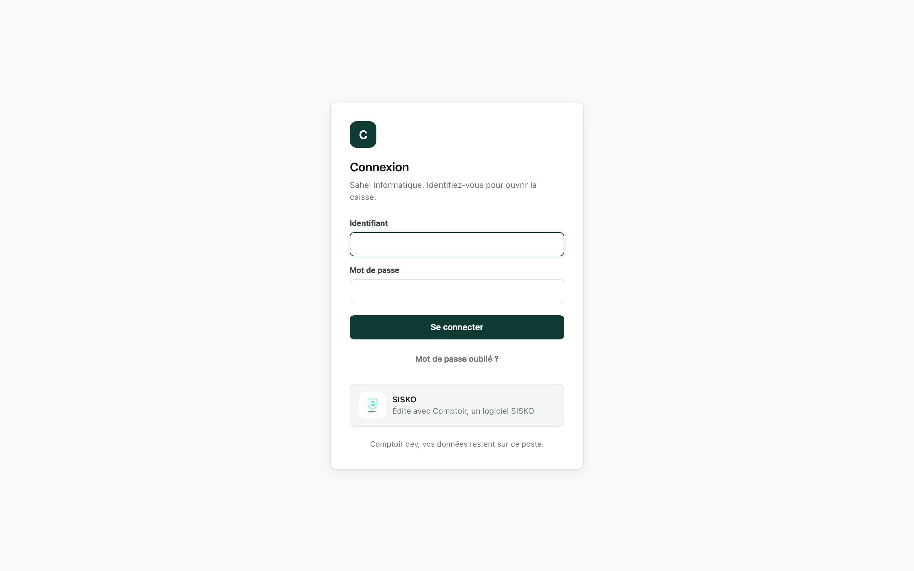
| Étape | Ce qu'elle demande |
|---|---|
| 1. Bienvenue | Rien à saisir. L'écran rappelle où vivront vos données et ce que fait le logiciel. |
| 2. Compte | Votre nom, un identifiant court, un mot de passe. Ce premier compte est administrateur : lui seul pourra créer les suivants. |
| 3. Entreprise | Nom commercial, forme juridique, NIF, RCCM, adresse et contact. Tout cela s'imprimera en tête de vos factures. |
| 4. Monnaie et taxes | La devise, le nombre de décimales, le taux de taxe par défaut, et si vos prix sont affichés hors taxes ou taxe comprise. |
| 5. Catalogue | Créer ou non un jeu de catégories de départ, que vous pourrez renommer. |
| 6. Sauvegardes | Sauvegarde automatique quotidienne, nombre d'archives conservées, apparence claire ou sombre. |
| 7. Récapitulatif | Une relecture, puis l'ouverture de la boutique. |
Il n'est enregistré nulle part en clair et ne peut pas être retrouvé. Si vous le perdez et qu'aucun autre administrateur n'existe, il n'y a aucun moyen de rouvrir la boutique.
Il s'applique à toute ligne de facture dont le taux n'est pas précisé. Vous
pourrez toujours saisir 0 sur une ligne pour une vente
exonérée : Comptoir fait la différence entre un taux nul explicite et un
taux non renseigné.
Si vos étiquettes affichent des prix taxe comprise, cochez la case correspondante. Comptoir extraira alors la base hors taxes du prix affiché, au lieu d'y ajouter la taxe. Le montant que paie le client sera exactement celui de l'étiquette.
Elles restent sur votre poste, dans des fichiers lisibles, et ne partent nulle part. Comptoir n'ouvre aucune connexion réseau.
| Système | Emplacement |
|---|---|
| Windows | %APPDATA%\Comptoir |
| macOS | ~/Library/Application Support/Comptoir |
| Linux | ~/.config/Comptoir |
Ce dossier contient trois répertoires :
data/ : vos articles, ventes, clients, mouvements et
paramètres, en fichiers JSON lisibles dans n'importe quel éditeur de
texte.backups/ : les archives de sauvegarde.exports/ : les documents que vous y déposez depuis
l'application.
Placez un fichier vide nommé portable.txt à côté de
l'exécutable. Les données vivront alors dans un dossier data
voisin, et suivront la clé de poste en poste.
Le format est ouvert et documenté. Même sans Comptoir, un tableur ou un éditeur de texte permet de retrouver l'intégralité de vos ventes. C'est un choix de conception, inscrit à l'article 2 de la licence.
Quiconque a accès à ce disque lit ces fichiers. Si le poste est partagé ou transportable, activez le chiffrement du disque fourni par votre système : BitLocker sous Windows, FileVault sous macOS, LUKS sous Linux.
Un écran, une barre latérale, onze pages. Ce que vous voyez dépend de votre rôle.
La barre latérale ne montre que les pages auxquelles votre rôle donne accès. Deux pastilles y attirent l'œil sur ce qui demande une action.
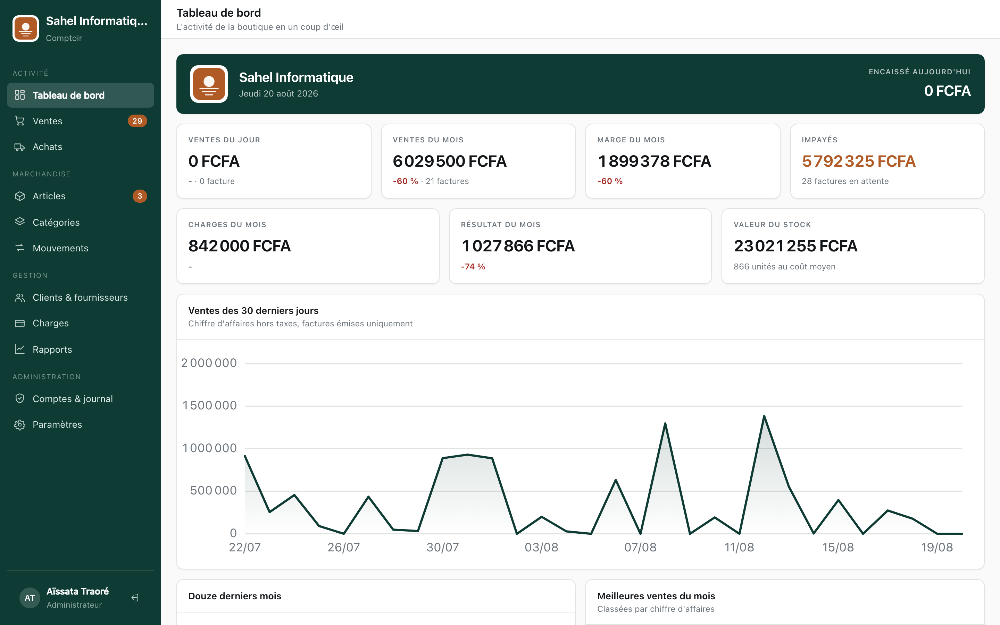
| Repère | Ce qu'il indique |
|---|---|
| Pastille sur Ventes | Le nombre de factures dont le solde n'est pas réglé. Elle disparaît quand tout est encaissé. |
| Pastille sur Articles | Le nombre d'articles au seuil d'alerte ou en rupture. C'est votre liste de réapprovisionnement. |
| Bandeau du haut | Votre logo et le nom de votre boutique, tels qu'ils partiront sur vos factures. |
| Votre nom, en bas | Ouvre votre fiche : rôle, droits, changement de mot de passe. Le bouton voisin ferme la session. |
Les écrans de saisie sont prévus pour ne pas quitter le clavier : ↑ ↓ parcourent les résultats de recherche, Entrée ajoute l'article sélectionné, Échap efface la recherche puis ferme la fenêtre.
Après une heure sans activité par défaut, réglable dans les paramètres. C'est ce qui protège la caisse quand on s'absente du comptoir.
Le rôle détermine ce que la personne peut faire, et surtout ce qu'elle peut voir. Le filtrage est appliqué par le moteur, pas par l'affichage.
| Ce qui est permis | Administrateur | Gérant | Vendeur |
|---|---|---|---|
| Consulter le catalogue et le stock | oui | oui | oui |
| Enregistrer des ventes | oui | oui | oui |
| Créer un client pendant la vente | oui | oui | oui |
| Modifier articles et catégories | oui | oui | non |
| Mouvements de stock et inventaire | oui | oui | non |
| Réceptions fournisseur | oui | oui | non |
| Charges d'exploitation | oui | oui | non |
| Prix d'achat, marges, rapports financiers | oui | oui | non |
| Sauvegardes et restauration | oui | oui | non |
| Suppressions définitives | oui | oui | non |
| Comptes et journal d'audit | oui | non | non |
| Paramètres de l'application | oui | non | non |
Ni prix d'achat, ni marge, ni valeur du stock, ni charges. Sur son écran, la colonne n'est pas grisée : la donnée ne lui est pas transmise. Il voit en revanche tout ce dont il a besoin pour vendre, y compris le montant total de ses factures et le reste dû de ses clients.
On ne peut pas désactiver son propre compte, ni retirer son rôle au dernier administrateur actif. Personne ne peut donc se verrouiller dehors par inadvertance.
Article par article, ou d'un seul coup depuis le tableur que vous tenez déjà.
Depuis Articles, bouton Nouvel article. Seules la désignation et le prix de vente sont obligatoires.
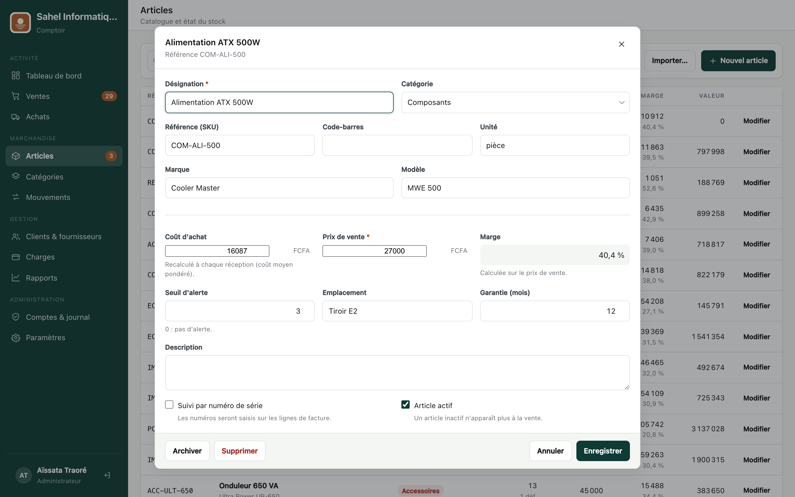
| Champ | À quoi il sert |
|---|---|
| Référence | Votre code interne. Laissée vide, elle est générée à partir de la désignation. |
| Code-barres | Permet de retrouver l'article d'un coup de douchette au comptoir. |
| Coût d'achat | Le prix de revient de départ. Il sera ensuite recalculé tout seul à chaque réception. |
| Seuil d'alerte | En dessous de ce nombre, l'article remonte dans la liste de réapprovisionnement. Zéro désactive l'alerte. |
| Stock initial | À la création seulement. Il produit un mouvement d'inventaire, pour que l'historique soit complet dès le premier jour. |
| Suivi par numéro de série | Pour les articles de valeur. Les numéros se saisissent sur la ligne de facture et s'impriment sur le document. |
La quantité n'apparaît pas en modification, et c'est volontaire. Un stock change par une réception, une vente, un retour ou un ajustement d'inventaire. C'est ce qui rend votre inventaire vérifiable, et vos écarts explicables.
Reprendre trois cents articles à la main, personne ne le fait. Exportez votre liste en CSV depuis Excel ou LibreOffice, et laissez Comptoir la lire.
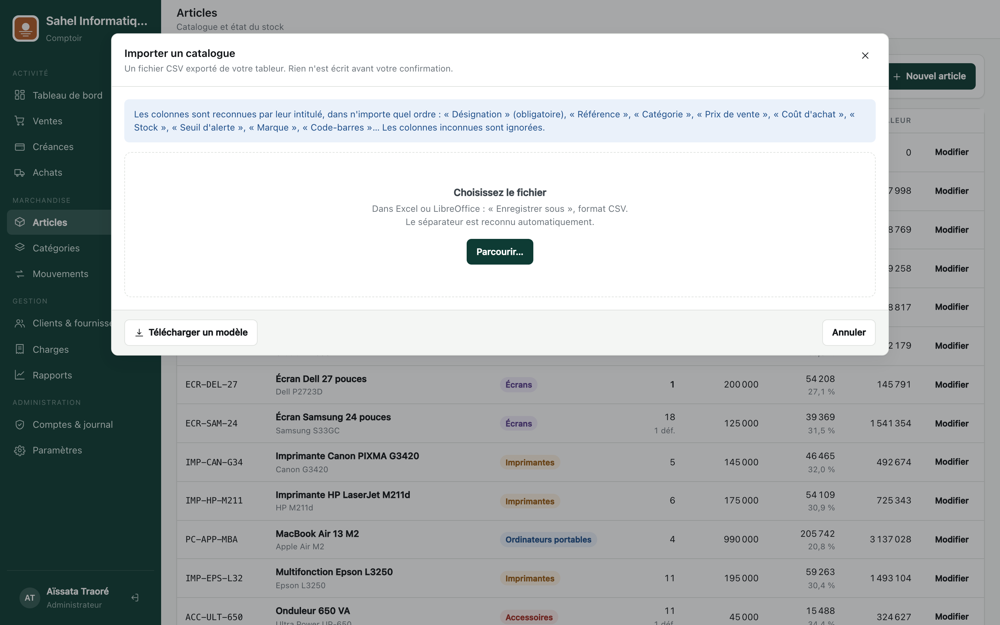
Elles sont identifiées par leur intitulé, dans n'importe quel ordre. Les colonnes que Comptoir ne comprend pas sont ignorées, et il vous dit lesquelles.
Désignation obligatoire
Référence, Réf., SKU, Code
Catégorie, Famille, Rayon
Prix de vente, Prix, Tarif, PV
Coût d'achat, Prix d'achat, PA
Stock, Quantité, Qté
Seuil, Seuil d'alerte, Stock mini
Marque, Modèle, Unité
Code-barres, EAN, Gencod
Emplacement, Garantie
Si la référence existe déjà, la fiche est mise à jour : désignation, prix de vente, catégorie, seuil. Mais ni la quantité en stock, ni le coût moyen. Ces deux valeurs découlent des mouvements enregistrés, pas d'un fichier.
Seule la première ligne est retenue. Les suivantes sont écartées, avec la mention du numéro de ligne en conflit, pour que vous puissiez corriger votre fichier.
Les catégories servent à ranger le catalogue, mais surtout à lire vos ventes par famille de produits.
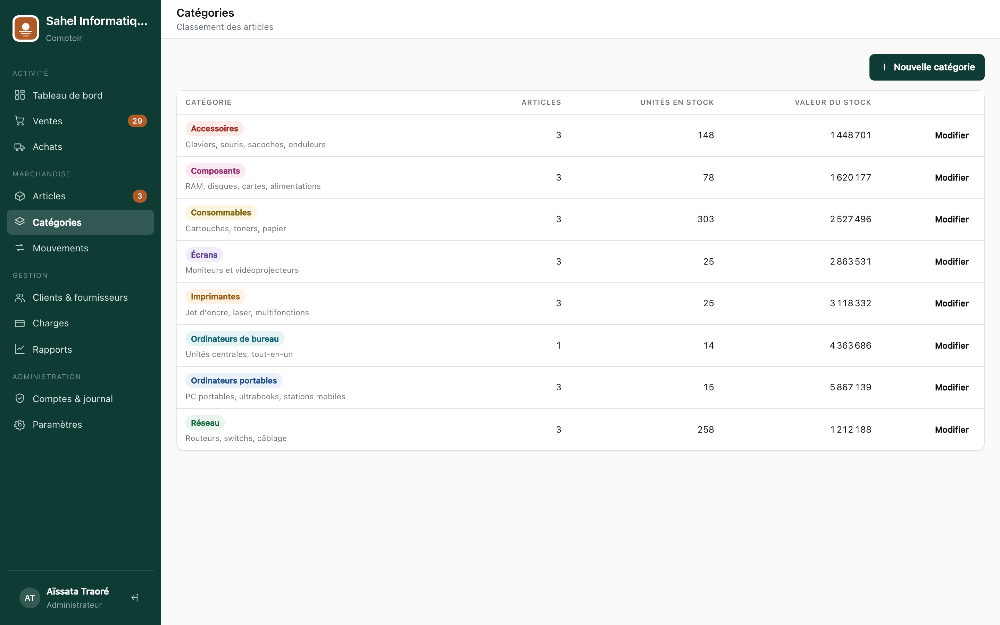
Chaque catégorie porte une couleur, qui se retrouve sur les badges du catalogue. Une catégorie contenant des articles ne peut pas être supprimée : déplacez d'abord ses articles.
Un article que vous ne vendez plus se archive : il disparaît des écrans de vente, mais son historique reste intact et ses ventes passées continuent de compter dans vos rapports.
La suppression définitive n'est possible que si l'article n'a aucun stock et n'apparaît dans aucun mouvement. Autrement dit, une fiche créée par erreur se supprime, un article qui a vécu s'archive.
Le geste le plus répété du logiciel. Il est pensé pour se faire au clavier, sans lâcher la douchette.
Depuis Ventes, bouton Nouvelle vente. Le stock est déduit à l'enregistrement, et la facture devient consultable et imprimable.
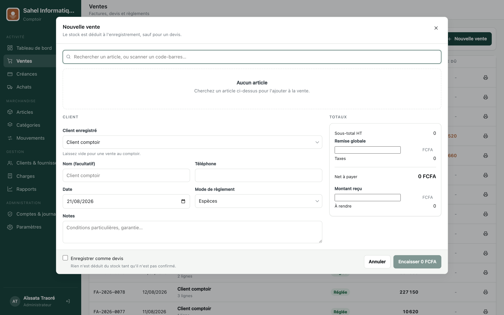
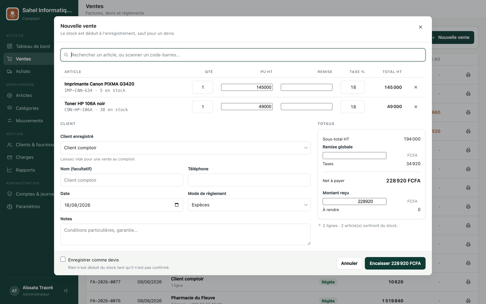
Une douchette se comporte comme un clavier très rapide qui termine par la touche Entrée. Il n'y a rien à configurer.
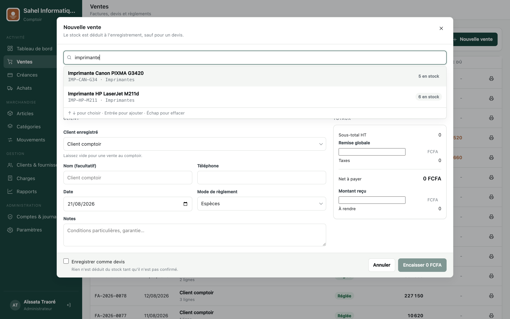
Placez le curseur dans le champ de recherche et scannez. L'article s'ajoute seul, et le champ reste actif pour le suivant. Vous pouvez enchaîner un panier entier sans toucher la souris.
La douchette envoie la touche Entrée souvent avant que la recherche ait répondu. Comptoir retient alors la validation et l'exécute dès l'arrivée des résultats, en donnant la priorité à la correspondance exacte du code-barres. Sans cela, un scan sur deux ne ferait rien.
Si l'article est suivi à l'unité, un champ apparaît sous la ligne. Saisissez autant de numéros que d'unités vendues, séparés par des virgules. Ils s'impriment sur la facture et deviennent cherchables : taper un numéro de série dans la recherche des ventes retrouve la facture correspondante.
Cochez Enregistrer comme devis en bas de l'écran de vente. Rien n'est déduit du stock, et aucun chiffre d'affaires n'est comptabilisé.
Le devis porte les mêmes montants qu'une facture, taxes comprises : un devis sans taxe n'engagerait à rien. Il apparaît dans la liste des ventes avec le statut Devis, et s'imprime pour être remis au client.
Quand le client confirme, ouvrez le devis et cliquez sur Émettre la facture. Le stock est alors déduit et la vente devient effective.
À l'émission, les prix de vente restent ceux du devis : c'est un engagement pris envers le client. En revanche, le coût des marchandises est réaligné sur le coût moyen du jour, pour que votre marge reflète ce que la marchandise a réellement coûté.
Une facture peut être réglée en plusieurs fois. Le solde et le statut se mettent à jour à chaque versement.
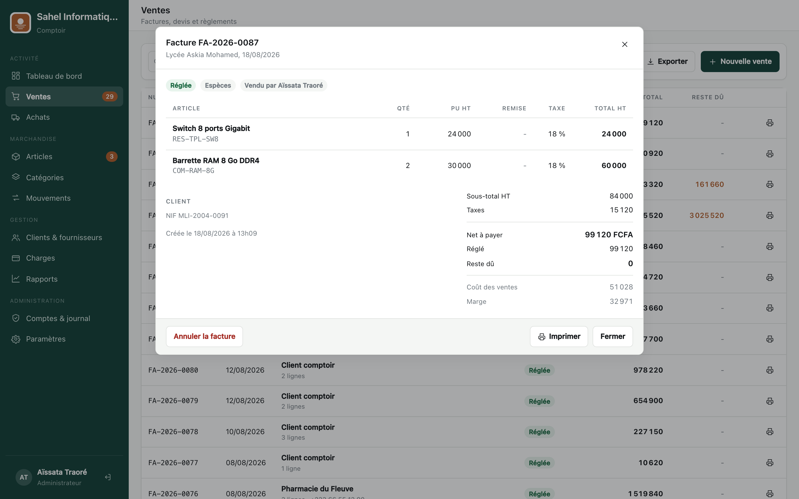
| Statut | Ce qu'il signifie |
|---|---|
| Devis | Aucun stock engagé, aucun chiffre d'affaires. |
| Émise | Stock déduit, rien d'encaissé. |
| Partiellement réglée | Un acompte a été versé, un solde reste dû. |
| Réglée | Le solde est à zéro. |
| Annulée | Marchandise remise en stock, document conservé. |
Le bouton Impayées de la liste, et la pastille de la barre latérale, donnent à tout moment la liste de ce qui reste à encaisser.
Une facture émise ne se supprime jamais. Elle s'annule, et le document reste.
L'annulation demande un motif, obligatoire, qui est inscrit sur le document et dans le journal d'audit. La marchandise revient en stock, et la facture conserve son numéro avec le statut Annulée.
Une numérotation de factures ne doit comporter aucun trou. Un numéro manquant est ce qu'un contrôle regarde en premier. En conservant le document annulé, votre séquence reste continue et justifiable.
Il n'est pas effacé en silence : la facture affiche un montant à rembourser, visible dans la liste. Le remboursement lui-même se fait hors du logiciel, mais vous ne l'oublierez pas.
Laisser partir la marchandise sans encaisser, c'est ouvrir une dette. Le logiciel la traite comme telle : elle a un débiteur, une échéance, et elle se retrouve dans les créances.
Un bandeau en tête du document indique « Vente à crédit », le montant restant dû et l'échéance. Le client repart avec un papier qui dit ce qu'il doit et quand, ce qui évite la plupart des discussions ultérieures.
Saisissez le montant versé à l'enlèvement : la facture passe en « partiellement réglée », et seul le solde entre dans les créances.
L'écran Créances répond à deux questions : combien on attend, et depuis combien de temps.
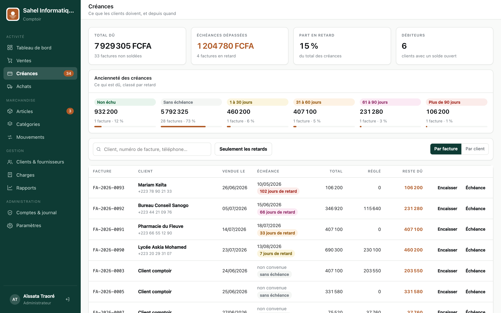
| Tranche | Ce qu'elle contient |
|---|---|
| Non échu | L'échéance n'est pas encore passée. Rien à faire. |
| Sans échéance | Aucune date n'a été convenue. Ces créances ne sont jamais comptées en retard, mais elles méritent qu'on leur fixe un terme. |
| 1 à 30 jours | Un simple rappel suffit le plus souvent. |
| 31 à 60 jours | Une relance écrite s'impose. |
| 61 à 90 jours | Le recouvrement devient incertain. |
| Plus de 90 jours | À traiter comme une créance douteuse. |
Une marge confortable ne paie pas le loyer si elle dort chez les clients. Regardez la part en retard aussi souvent que le chiffre d'affaires.
C'est le seul écran qui fait entrer de la marchandise et qui recalcule vos coûts de revient.
Depuis Achats, bouton Nouvelle réception. À enregistrer au moment où la marchandise arrive, pas quand la facture fournisseur est payée.
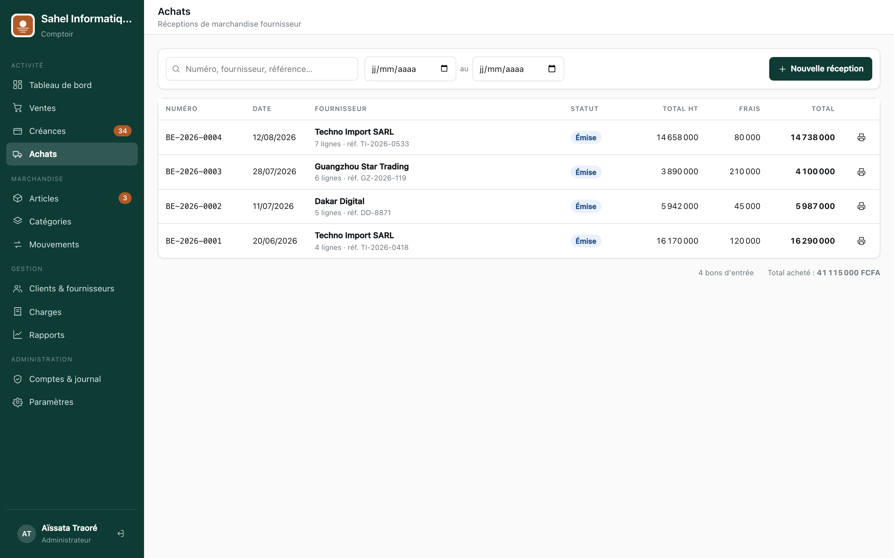
C'est permis, et les quantités s'additionnent correctement. Utile quand un fournisseur facture deux lots du même article à des prix différents.
Le transport et la douane font partie de ce que la marchandise vous a coûté. Les oublier revient à surestimer vos bénéfices.
Saisissez le montant global des frais de la réception. Comptoir le répartit sur les lignes au prorata de leur valeur, puis l'intègre au coût de revient de chaque article.
| Ligne | Valeur | Quote-part | Coût de revient |
|---|---|---|---|
| Article A, 2 unités à 10 000 | 20 000 | 2 000 | 11 000 l'unité |
| Article B, 1 unité à 10 000 | 10 000 | 1 000 | 11 000 l'unité |
| Frais de transport | 3 000 | ||
Le coût d'un article n'est pas le prix de son dernier achat, mais la moyenne de ce que vous avez payé pour ce qui est en rayon.
nouveau coût = (ancienne quantité × ancien coût + reçu × coût de revient)
÷ (ancienne quantité + reçu)Exemple : vous avez 6 portables achetés 320 000 pièce. Vous en recevez 4 à 345 000 frais compris. Le coût moyen devient 330 000, et c'est ce chiffre qui servira à calculer la marge de vos prochaines ventes.
Si vous appliquez une marge fixe, saisissez-la à la réception. Comptoir recalcule alors les prix de vente des articles reçus, coût de revient compris. Laissée à zéro, vos prix de vente ne bougent pas.
L'annulation retire la marchandise du stock. Elle est refusée si une partie a déjà été vendue, car elle retirerait un stock qui n'existe plus.
Il refléterait un historique d'achats qui n'existe plus. Il se réaligne naturellement à la réception suivante. C'est une limite assumée, décrite dans la documentation comptable du logiciel.
Tout ce qui arrive à la marchandise entre son entrée et sa sortie : casse, retours, réparations, comptages.
Depuis Mouvements. Chacune laisse une trace datée, signée, et consultable pour toujours.
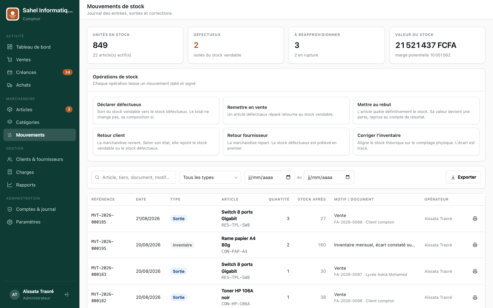
| Opération | Effet sur le stock |
|---|---|
| Déclarer défectueux | Sort du stock vendable vers le stock défectueux. Le total ne change pas, sa composition si. |
| Remettre en vente | Un article défectueux réparé retourne au stock vendable. |
| Mettre au rebut | L'article quitte définitivement le stock. Sa valeur devient une perte, reprise au compte de résultat. |
| Retour client | La marchandise revient. Selon son état, elle rejoint le stock vendable ou le stock défectueux. |
| Retour fournisseur | La marchandise repart. Le stock défectueux est prélevé en premier. |
| Corriger l'inventaire | Aligne le stock théorique sur le comptage physique. L'écart est tracé. |
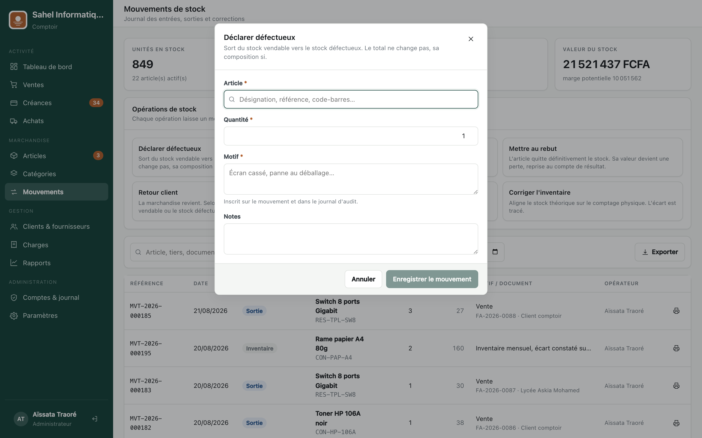
Il est compté à part, apparaît séparément sur les écrans et dans les rapports, et ne peut pas être ajouté à une facture. Il ne quitte cet état que par une réparation, un retour fournisseur ou un rebut.
C'est la seule façon de changer une quantité sans passer par un achat ou une vente. L'écart est enregistré, jamais effacé.
Si le comptage correspond déjà au stock enregistré, l'ajustement est refusé : il n'y a rien à corriger, et un mouvement à zéro n'apprendrait rien à personne.
Chaque mouvement porte une référence unique de la forme
MVT-2026-000123, la date, l'article, la quantité, le stock
résultant, le motif et l'opérateur. Le journal se filtre par type, par
période et par recherche libre, et s'exporte vers un tableur.
La somme des mouvements d'un article doit toujours égaler sa quantité en fiche. C'est ce qui vous permet, devant un écart, de remonter exactement à l'opération qui l'a produit.
Une sortie de stock sans facture laisse une trace informatique, mais rien à classer. Chaque mouvement s'imprime.
Le bouton d'impression figure sur chaque ligne du journal. Le titre du document suit l'opération, et les emplacements de signature aussi.
| Mouvement | Document | Signatures |
|---|---|---|
| Sortie | Bon de sortie | Remis par / Reçu par le client |
| Retour client | Bon de retour client | Rapporté par / Repris par |
| Retour fournisseur | Bon de retour fournisseur | Renvoyé par / Repris par |
| Défaut | Constat de défaut | Constaté par / Visa |
| Rebut | Bon de mise au rebut | Mis au rebut par / Visa |
| Inventaire | Constat d'inventaire | Compté par / Visa |
Qui vous achète, qui vous fournit, et ce que la boutique coûte à faire tourner.
Clients et fournisseurs partagent le même écran, séparés par un sélecteur. Une vente au comptoir n'exige aucune fiche.
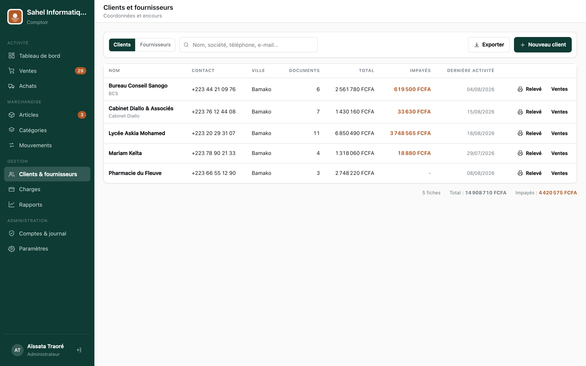
Créez une fiche pour les clients qui reviennent, ceux qui achètent à crédit, et ceux qui ont besoin de leur NIF sur la facture. Un vendeur peut créer un client pendant une vente, sans quitter l'écran d'encaissement.
La colonne Impayés donne, pour chaque client, ce qu'il vous doit toutes factures confondues. Le bouton Relevé imprime le détail : toutes ses factures, ce qu'il a réglé, ce qui reste dû. C'est le document à lui présenter pour une relance.
Le bouton Ventes filtre la liste des factures sur ce client.
Elle se désactive. Son nom figure sur des factures : l'effacer laisserait des documents orphelins. Une fiche désactivée reste consultable mais n'est plus proposée à la vente.
Loyer, salaires, électricité, transport. Tout ce que la boutique coûte, sauf l'achat de la marchandise, qui passe par les réceptions.
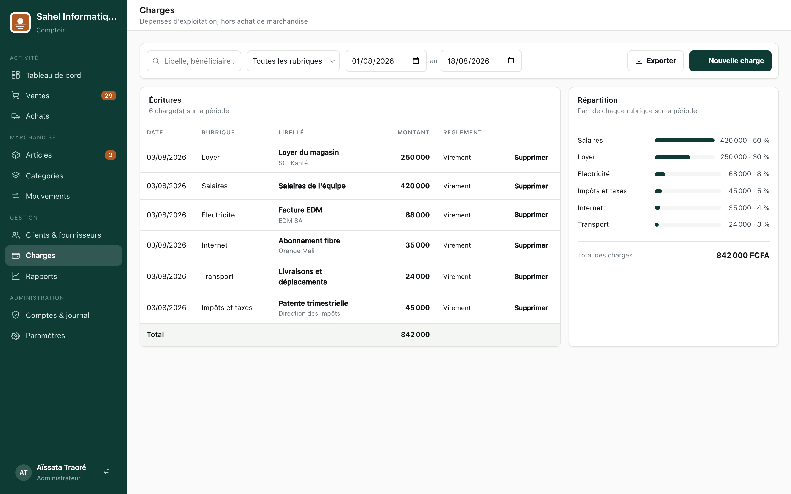
Chaque charge porte une date, une rubrique, un libellé, un montant et un mode de règlement. Les rubriques proposées couvrent les cas courants, et vous pouvez en saisir d'autres.
La marge brute, c'est ce que rapporte la revente de la marchandise. Le résultat, c'est ce qui reste une fois le loyer, les salaires et l'électricité payés. Une boutique peut afficher une belle marge et perdre de l'argent. Sans charges saisies, Comptoir ne peut pas vous le dire.
Ce que la boutique a vendu, ce qu'elle a gagné, et ce qu'elle immobilise.
Ce qu'il faut savoir en ouvrant la boutique le matin. Les variations se comparent à la période précédente de même durée.
| Indicateur | Ce qu'il compte |
|---|---|
| Ventes du jour | Chiffre d'affaires hors taxes, comparé à hier. |
| Ventes du mois | Depuis le premier du mois, comparé au mois précédent complet. |
| Marge du mois | Chiffre d'affaires net moins le coût des marchandises vendues. |
| Impayés | La somme des soldes restant dus, toutes factures confondues. |
| Résultat du mois | Marge moins charges moins pertes sur rebuts. |
| Valeur du stock | Au coût moyen pondéré. C'est l'argent immobilisé en rayon. |
Plus bas, la courbe des trente derniers jours, celle des douze derniers mois, les meilleures ventes, les articles à surveiller et les derniers mouvements.
Son tableau de bord affiche les ventes du jour, du mois et les impayés, avec les courbes correspondantes. La marge, les charges, le résultat et la valeur du stock n'y figurent pas.
Le premier onglet des rapports. Choisissez une période en haut à droite, puis un pas d'agrégation : jour, semaine, mois ou trimestre. Le tableau donne, pour chaque intervalle, le chiffre d'affaires, le coût, la marge, son taux, les charges et le résultat.
Les périodes sans activité apparaissent à zéro plutôt que d'être omises : une courbe avec des trous ment sur la régularité des ventes.
Ce que la boutique a gagné sur une période, produits d'un côté, charges de l'autre.
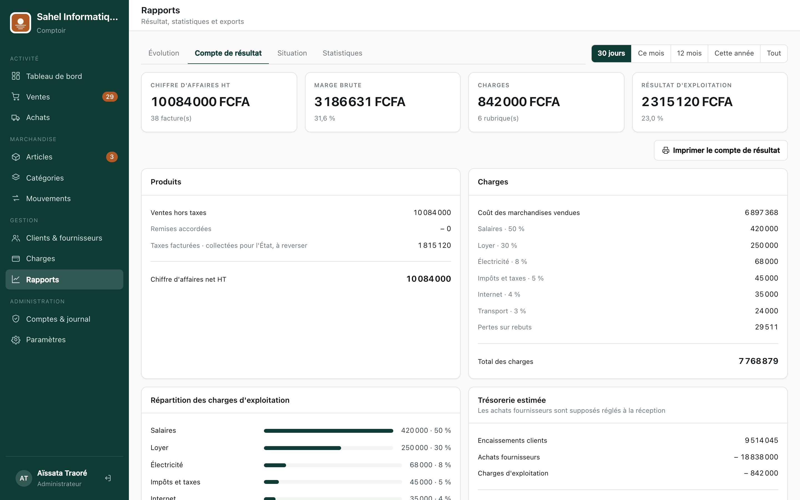
chiffre d'affaires net hors taxes
− coût des marchandises vendues
= marge brute
− charges d'exploitation
− pertes sur rebuts
= résultat d'exploitationSeules les factures émises comptent. Les devis n'ont aucun effet, et les factures annulées sont exclues du chiffre d'affaires tout en restant conservées.
Elle suppose que les achats fournisseurs sont réglés à la réception, ce qui est le cas courant en commerce de détail. Comptoir ne suit pas les échéances fournisseurs et ne peut donc pas le vérifier. Ce chiffre situe une tendance, il n'arrête pas une trésorerie.
Un arrêté à une date : valeur du stock sain et du stock défectueux, créances clients, résultat cumulé depuis l'ouverture, et taxes facturées restant à reverser.
Comptoir ne tient ni comptes bancaires, ni caisse, ni immobilisations, ni dettes fournisseurs, ni capital. Les rubriques absentes le sont volontairement : mieux vaut un état partiel et honnête qu'un bilan d'apparence complète mais faux. Comptoir est un outil de gestion, pas un logiciel comptable certifié.
Les répartitions qui font apparaître ce qu'un total masque.
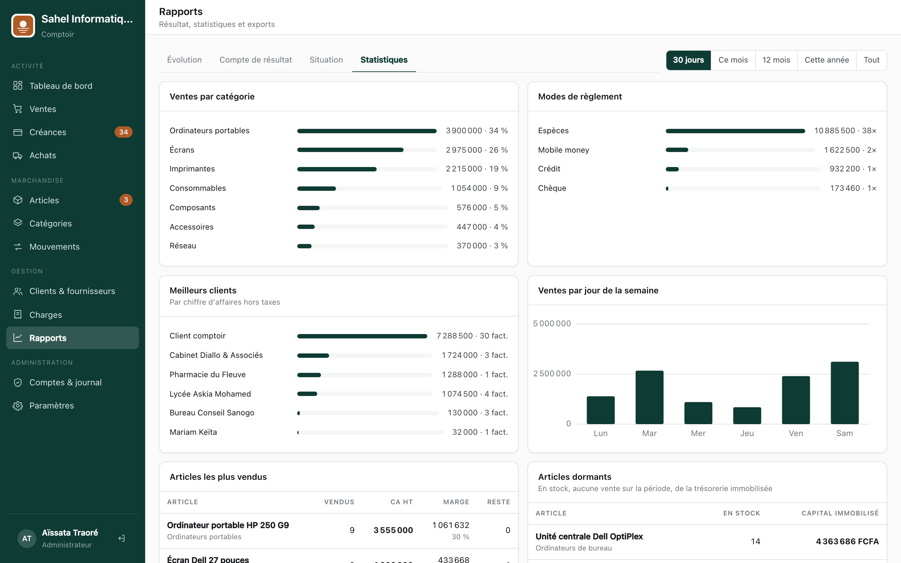
Plus bas, deux tableaux se répondent : les articles les plus vendus, et les articles dormants, c'est-à-dire ceux qui sont en stock mais n'ont rien vendu sur la période, avec le capital qu'ils immobilisent. C'est souvent l'information la plus actionnable de tout le logiciel.
| Depuis | Vous obtenez |
|---|---|
| Une facture ou un devis | Le document PDF, avec votre logo et vos mentions légales. |
| Un bon d'entrée | Le justificatif de réception. |
| Un mouvement de stock | Le bon à faire signer. |
| Une fiche client | Son relevé de compte. |
| Le catalogue | L'état du stock, valorisé si votre rôle le permet. |
| Les rapports | Le rapport de ventes ou le compte de résultat. |
| Toutes les listes | Un fichier CSV, lisible d'un double-clic dans Excel. |
Chaque document s'affiche avant d'être enregistré : ce que vous voyez est
exactement le fichier. Deux boutons le classent, soit à l'endroit de votre
choix, soit directement dans le dossier exports de Comptoir.
Un vendeur qui exporte le catalogue obtient un fichier sans les colonnes de coût ni de marge. Un export ne contourne jamais ce que l'écran masque.
Donner un accès à quelqu'un, choisir ce qu'il peut voir, et savoir qui a fait quoi.
Depuis Comptes & journal, réservé aux administrateurs.
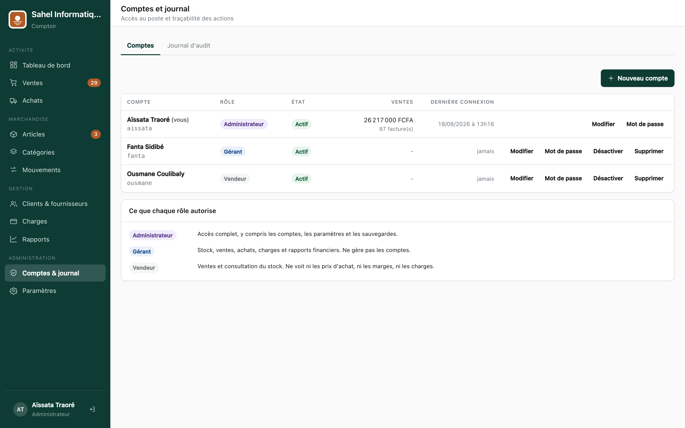
Donnez à chacun son propre compte. Un compte partagé rend le journal d'audit inutile : savoir qu'une remise a été accordée sans savoir par qui n'apprend rien.
Deux façons : saisir un mot de passe vous-même, ou en faire générer un provisoire. Dans les deux cas, le titulaire devra le remplacer à sa prochaine connexion.
Il permet d'ouvrir la session, et rien d'autre : toute action est refusée tant que le titulaire n'a pas choisi son propre mot de passe. Un mot de passe transmis de vive voix ne doit pas rester une clé utilisable indéfiniment.
Chacun change son propre mot de passe depuis sa fiche, en cliquant sur son nom en bas de la barre latérale.
Second onglet de la même page. Il enregistre chaque action sensible avec son auteur et son horodatage : créations, modifications, suppressions, annulations, connexions, réinitialisations.
Aucune fonction du logiciel ne permet de l'effacer ni de le modifier, pas même pour un administrateur. C'est ce qui lui donne sa valeur.
Deux minutes par mois qui évitent de tout reperdre le jour où le disque lâche.
Une archive complète est créée au premier démarrage de chaque journée. Elle reflète donc la veille entière.
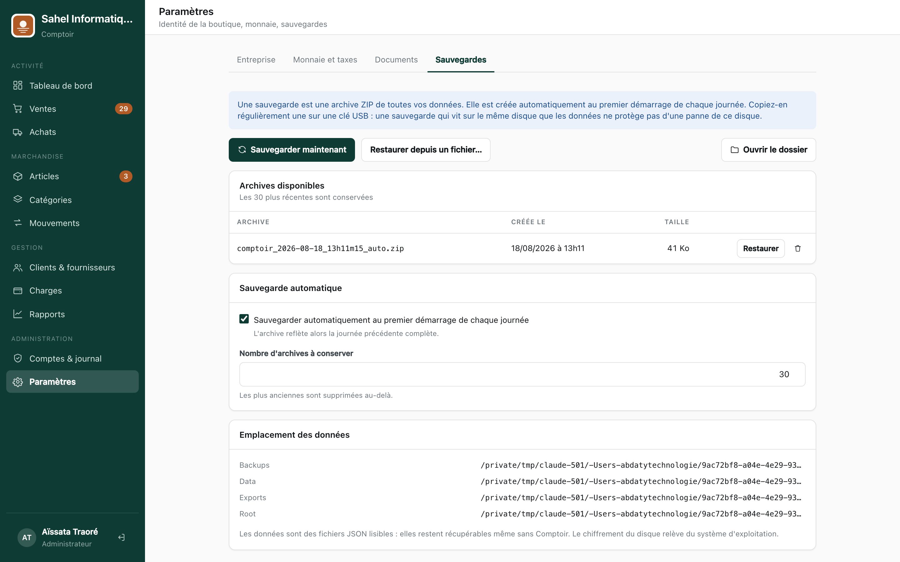
Une archive contient l'intégralité de vos données : articles, ventes, clients, mouvements, charges, comptes et paramètres. C'est un fichier ZIP ordinaire, que n'importe quel outil sait ouvrir.
Comptoir vérifie qu'il s'agit bien d'une de ses sauvegardes, et refuse toute archive dont une entrée tenterait d'écrire hors du dossier prévu. Une restauration ne peut pas devenir un moyen de déposer des fichiers ailleurs sur le disque.
Une sauvegarde qui vit sur le même disque que les données ne protège pas d'une panne de ce disque, ni d'un vol de l'ordinateur. Branchez une clé USB, ouvrez le dossier des sauvegardes depuis les paramètres, copiez la dernière archive. Deux minutes.
Profitez-en pour vérifier trois choses :
Les mots de passe sont hachés : ils ne se retrouvent pas. Si le dernier administrateur oublie le sien, une procédure permet de rouvrir la boutique.
Le lien Mot de passe oublié de l'écran de connexion affiche la marche à suivre, avec le chemin exact du dossier concerné sur votre poste.
REINITIALISER-MOT-DE-PASSE.txt. Vous pouvez y écrire
l'identifiant du compte à reprendre ; laissé vide, c'est le premier
administrateur qui est retenu.MOT-DE-PASSE-PROVISOIRE.txt, au même endroit.Toute personne qui le lit peut ouvrir votre boutique. La reprise est par ailleurs inscrite dans le journal d'audit, avec sa date.
Quiconque peut créer ce fichier peut déjà lire toutes vos ventes et tous vos clients : les données sont en clair sur le disque, par choix. La reprise ne donne donc rien de plus. La protection contre un accès physique au poste relève du chiffrement du disque, décrit en section 1.4.
Deux gestes distincts. Désinstaller retire le programme, effacer supprime les données.
| Système | Désinstallation |
|---|---|
| Windows | Paramètres, Applications, Applications installées, Comptoir, Désinstaller. |
| macOS | Glissez Comptoir du dossier Applications vers la corbeille. |
| Linux | Supprimez l'exécutable et le raccourci que vous aviez créés. |
Elles restent dans leur dossier, prêtes à être retrouvées par une réinstallation ou par une version plus récente. C'est ce qui rend une mise à jour sans risque.
Depuis Paramètres, onglet Ce poste. L'opération demande de saisir le nom de votre entreprise, prend une dernière sauvegarde par défaut, et laisse le logiciel dans l'état d'un premier démarrage.
Décochez la conservation de la sauvegarde : les archives et les exports sont alors supprimés aussi. Sur un disque non chiffré, une suppression de fichiers ne garantit pas l'effacement physique des secteurs. Pour une cession définitive, utilisez l'effacement sécurisé fourni par votre système.
Ce qu'on cherche vite, un jour où l'on n'a pas le temps de lire.
| Touche | Effet |
|---|---|
| Entrée | Dans une recherche d'article : ajoute le résultat sélectionné. C'est aussi ce que fait une douchette code-barres. |
| ↑ ↓ | Parcourent les résultats de recherche. |
| Échap | Efface la recherche en cours ; si elle est vide, ferme la fenêtre. |
| Tab | Passe au champ suivant, dans l'ordre de saisie. |
Annulez la facture avec pour motif l'erreur de saisie, puis refaites-la. La marchandise revient en stock, l'ancien document reste conservé et numéroté.
Il est probablement archivé. Ouvrez Articles, cochez Avec les archivés, puis réactivez-le depuis sa fiche.
Comptez, puis passez par Mouvements, Corriger l'inventaire. L'écart sera enregistré avec votre motif, ce qui vous permettra plus tard de comprendre d'où il venait.
Vérifiez que les frais de transport et de douane sont bien saisis à la réception. Sans eux, le coût de revient est sous-estimé et la marge paraît meilleure qu'elle ne l'est. Vérifiez ensuite les charges du mois : une marge correcte peut donner un résultat négatif.
C'est le comportement prévu. Si cette personne doit les voir, passez son compte en Gérant depuis la page des comptes.
S'il existe un autre administrateur, demandez-lui de le réinitialiser depuis la page des comptes : c'est le chemin le plus simple.
Sinon, utilisez la reprise décrite en section 10.4. Le lien Mot de passe oublié de l'écran de connexion affiche la marche à suivre avec le chemin exact du dossier.
Chaque poste tient ses propres données, il n'y a pas de synchronisation. Pour un poste unique déplacé entre deux lieux, utilisez le mode portable sur clé USB décrit en section 1.4.
| Quoi | Où |
|---|---|
| Vos données | %APPDATA%\Comptoir,
~/Library/Application Support/Comptoir ou
~/.config/Comptoir |
| Vos sauvegardes | Le sous-dossier backups |
| Vos exports | Le sous-dossier exports |
| Le journal technique | comptoir.log, à joindre à
tout signalement de problème |
| Code source et versions | github.com/siskoai/stock |
Ouvrez une issue sur le dépôt, en indiquant votre version, votre système, ce que vous attendiez et ce qui s'est produit. Si un chiffre est faux, donnez les montants exacts qui l'ont produit : c'est ce qui permet de reproduire le calcul.
Passez par Security, puis Report a vulnerability sur le dépôt. Le signalement reste privé jusqu'à la publication d'un correctif.
Ces limites sont assumées, et il vaut mieux les connaître avant d'en avoir besoin.